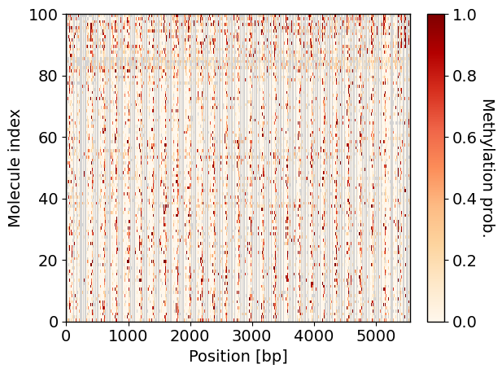
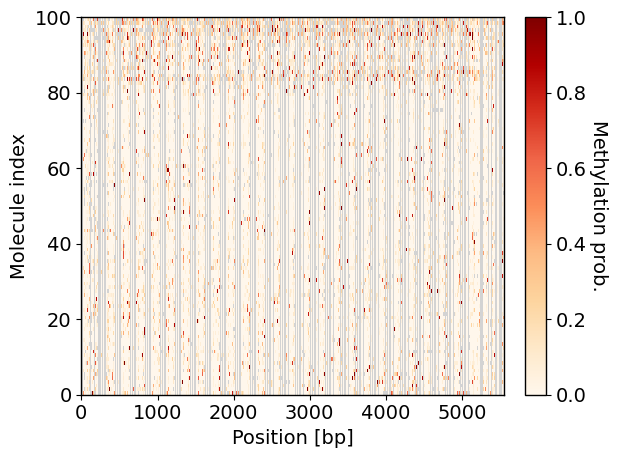
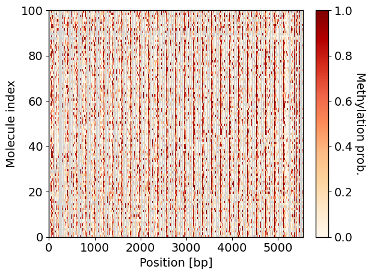
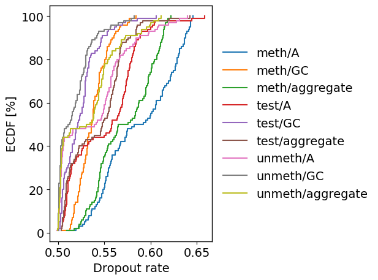
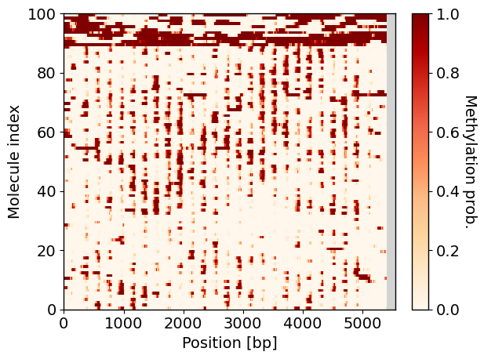
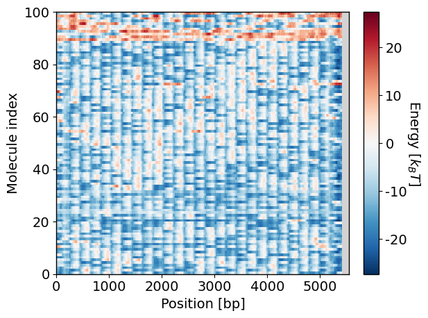
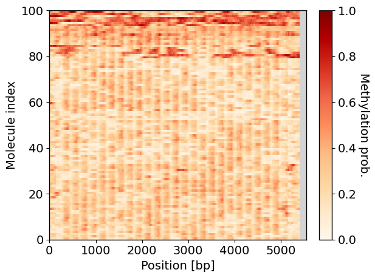
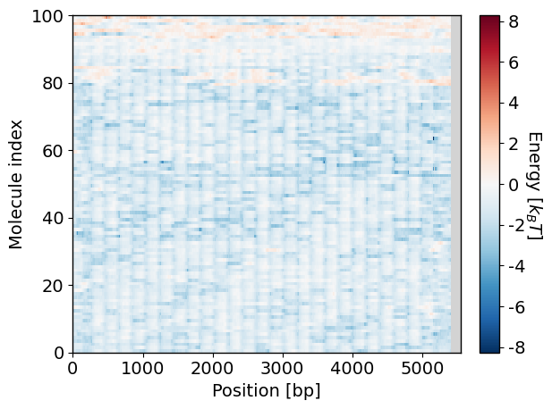

Tutorial 1: From Raw Data to Normalized Methylation Probability
This tutorial and the next explain how to use the higher-level API of the catella package to perform nucleosome positioning Monte Carlo simulations. Here we focus on transforming the raw methylation scoring data (extracted from the bam file using modkit, see Tutorial 0) and converting them into normalized methylation probabilities (see Nucleosome Occupancy Model page).
For those who would like to see the complete pipeline (the full list of commands) without the detailed explanation, please see the Example Pipeline page.
The following steps are conducted within a Jupyter notebook environment. Jupyter notebook is not automatically provided within the supplied Conda environment, but it can be installed as follows:
conda activate nucmc
conda install jupyterlab ipywidgets
Note: It is not required to use Jupyter notebook to run the commands in this tutorial. Using the terminal and the default Python interpreter will work just fine, although bash commands will need to be run without ‘!’ preceding them.
Prerequisite data files
To begin, we download some example DNA methylation footprinting data for the artificial fibers 601, Recon-1 (R1), and Recon-2 (R2). The data were generated via Oxford Nanopore long-read sequencing. These data are available from the GitHub repository, and they would have been automatically downloaded when doing git clone of the project and are stored in example/tut01_meth_prob/experiment/raw_data from the project root directory. The step of extracting the raw methylation scoring data from
the bam file to a tsv file (i.e., Tutorial 0) has already been done here. There are six files in this directory:
segments.size: a file containing the size of each DNA fiber segment.segments.fa: a fasta file containing the underlying DNA sequence for each segment.segments.fa.fai: an index file for the fasta file to enable quick lookup of individual segments’ DNA sequences.chromatin.tsv.gz: the methylation footprinting scores output from ModKit for chromatinized DNA.unmethylated.tsv.gz: footprinting scores for control samples where the DNA fibers are unmethylated.methylated.tsv.gz: footprinting scores for control samples where the fibers are fully methylated.
Let us have a quick look at the content of some of these files. segments.size contains the identifier and length (in bp) of the DNA segment:
[1]:
!cat example/tut01_meth_prob/experiment/raw_data/segments.size
601 11110
R1 11220
R2 11220
And here we show the top few lines of the chromatin.tsv.gz file generated from ModKit:
[2]:
!gzip -cd example/tut01_meth_prob/experiment/raw_data/chromatin.tsv.gz 2>/dev/null | head -n5
read_id forward_read_position ref_position chrom mod_strand ref_strand ref_mod_strand fw_soft_clipped_start fw_soft_clipped_end alignment_start alignment_end read_length mod_qual mod_code base_qual ref_kmer query_kmer canonical_base modified_primary_base inferred flag motifs
d1267048-678d-40a1-a0fb-d5af1014469e 4 2 601 + + + 2 9 0 11110 10699 0.9550781 m 21 TGCGG TGCGG C C false 0 GC,1
d1267048-678d-40a1-a0fb-d5af1014469e 11 9 601 + + + 2 9 0 11110 10699 0 a 32 TGAAA TGAAA A A true 0 A,0
d1267048-678d-40a1-a0fb-d5af1014469e 12 10 601 + + + 2 9 0 11110 10699 0 a 32 GAAAT GAAAT A A true 0 A,0
d1267048-678d-40a1-a0fb-d5af1014469e 13 11 601 + + + 2 9 0 11110 10699 0 a 34 AAATA AAATA A A true 0 A,0
Note: It is important to keep the header when outputting the data from ModKit. catella uses this to identify the relevant data columns to keep for any downstream analysis.
catella requires data from the following columns of the ModKit output tab-delimited file (as per modkit extract full output, see Tutorial 0 and https://nanoporetech.github.io/modkit/intro_extract.html):
Column name |
Description |
Loaded column index |
|---|---|---|
read_id |
name of the read |
0 |
ref_position |
aligned 0-based reference sequence position |
1 |
chrom |
name of aligned contig |
2 |
ref_strand |
strand of the reference read is aligned to |
3 |
mod_qual |
probability of the base modification in the next column |
4 |
mod_code |
base modification code from the MM tag |
5 |
Loading the data files
The first step towards obtaining the methylation probabilities is loading the data above into a MethPrintExperiment object. We set up some variables for convenience:
[3]:
from pathlib import Path
exp_dir = Path("example/tut01_meth_prob/experiment")
raw_dir = exp_dir/"raw_data"
chromsize = raw_dir/"segments.size"
fasta_file = raw_dir/"segments.fa"
test_file = raw_dir/"chromatin.tsv.gz"
unmeth_file = raw_dir/"unmethylated.tsv.gz"
meth_file = raw_dir/"methylated.tsv.gz"
To load the data, we use the method catella.load_raw. We provide the sequence file (fasta_file) and the types of methyltransferase (MTase) we used in the experiment (A and GC here, for m6A and CpG/GpC methylation, respectively), as these are needed for QC and normalization. Additionally, since these fibers were sequenced by ligating the forward and reverse strands of the same molecule together into one continuous read, the reference sequences are recorded at twice their true fiber length
(e.g., 601 is 11110 bp in segments.size but only 5555 bp long); we therefore set the option wrap=True to fold positions back onto the true fiber length, combining calls from equivalent positions across the doubled reference.
[4]:
import catella
exp_data = catella.load_raw(chromsize=chromsize,
test_file=test_file,
unmeth_file=unmeth_file,
meth_file=meth_file,
fasta_file=fasta_file,
mtase=["A", "GC"],
wrap=True,
nworker=3)
Reading example/tut01_meth_prob/experiment/raw_data/chromatin.tsv.gz ...Reading example/tut01_meth_prob/experiment/raw_data/unmethylated.tsv.gz ...
Reading example/tut01_meth_prob/experiment/raw_data/methylated.tsv.gz ...
exp_data is a MethPrintExperiment object, which contains only the relevant attributes from the ModKit output that we need for running simulations later on. We can use the public attributes of exp_data, for instance, to find out what chromosomes are loaded and what MTases were used (as supplied above):
[5]:
print("Chromosomes (genes): ", exp_data.chroms)
print("Types of methyltransferase(s) (MTases): ", exp_data.mtase)
Chromosomes (genes): ('601', 'R1', 'R2')
Types of methyltransferase(s) (MTases): ('A', 'GC')
We can also use the raw property to access each gene’s raw data as MethPrintData objects. For example, the test_data property returns a Pandas data frame of the chromatinized (test) fiber’s footprinting data (say for 601 fibers):
[6]:
exp_data.raw["601"].test_data
[6]:
| mol_index | pos | strand | mod_qual | mod_code | |
|---|---|---|---|---|---|
| 0 | 81.0 | 2.0 | + | 0.955078 | m |
| 1 | 81.0 | 9.0 | + | 0.000000 | a |
| 2 | 81.0 | 10.0 | + | 0.000000 | a |
| 3 | 81.0 | 11.0 | + | 0.000000 | a |
| 4 | 81.0 | 13.0 | + | 0.000000 | a |
| ... | ... | ... | ... | ... | ... |
| 310364 | 14.0 | 13.0 | - | 0.052734 | a |
| 310365 | 14.0 | 11.0 | - | 0.705078 | a |
| 310366 | 14.0 | 10.0 | - | 0.083984 | a |
| 310367 | 14.0 | 9.0 | - | 0.000000 | a |
| 310368 | 14.0 | 2.0 | - | 0.000000 | m |
310369 rows × 5 columns
To save storage space, read_id is replaced here by an integer mol_index; the original read IDs are recoverable via the test_mol_id property. The unmethylated and methylated control data are accessed the same way, via unmeth_data/unmeth_mol_id and meth_data/meth_mol_id, respectively.
Note: These data frames and read-ID arrays are copies — modifying them does not affect exp_data, and the copies are not saved. Use the analysis property (see below) to store any modifications or annotations. Read-ID arrays are also returned as non-writeable numpy arrays.
Performing QC
An important step now is to determine the quality of the raw methylation scoring in individual molecules. Specifically, we would like to see whether there are molecules with a particularly low or high number of emitted methylation calls (i.e., low or high dropout rates). To this end, we plot the raw methylation scores for each data source (test, unmeth, or meth). For the remainder of this tutorial, we focus on the 601 fibers for illustration; R1 and R2 go through the exact same steps but are not
shown individually here for brevity. We sort the molecules by their similarity in methylation scoring (sort_by_linkage) and then plot a heatmap showing the sorted values (using plot_meth_prob):
[7]:
sorted_mat = catella.sort_by_linkage(exp=exp_data, raw_which="test", fill_nan=0.0)
catella.plot_meth_prob(exp_data.analysis["601"]["test_sorted"], vmin=0.0, vmax=1.0)

[8]:
sorted_mat = catella.sort_by_linkage(exp=exp_data, raw_which="unmeth", fill_nan=0.0)
catella.plot_meth_prob(exp_data.analysis["601"]["unmeth_sorted"], vmin=0.0, vmax=1.0)

[9]:
sorted_mat = catella.sort_by_linkage(exp=exp_data, raw_which="meth", fill_nan=0.0)
catella.plot_meth_prob(exp_data.analysis["601"]["meth_sorted"], vmin=0.0, vmax=1.0)

All heatmaps look as expected: the fully methylated fibers have the highest methylation probabilities, while the unmethylated ones have the lowest, and the actual chromatinized fibers are in between the two cases, with a tiny sub-population at the top that seems to show a higher amount of methylation. A more quantitative way to evaluate the dropout is to plot the empirical cumulative distribution function (ECDF) of the dropout rate across molecules, and this can be done via the function
plot_dropout_ecdf:
[10]:
catella.plot_dropout_ecdf(exp=exp_data, chrom="601")

The plot shows that the dropout rate is between 0.5 and 0.65 across all channels, reflecting the limited density of CpG/GpC and m6A sites in this short, repetitive construct rather than a data-quality problem. Given that there are no obvious outliers, we will proceed without performing any filtering on the data.
Computing normalized methylation probabilities
The next step is to convert the raw methylation scoring into methylation probabilities, and two approaches are available here. compute_model_prob fits a calibrated Bayesian log-odds model (see the section Emission model data likelihood) and explicitly corrects for the fact that nearby methylation calls are not statistically independent, via a “per-channel” eta crosstalk factor (here we use “channel” to refer to each methylation type, e.g.,
the A channel for adenine sites that can be modified as m6A). It can also calibrate without meth/unmeth controls, via an expectation-maximization fit to the test data alone.
compute_empirical_prob instead smooths the raw signal with a rolling window and rescales it against percentile bounds from the control data (or the test data, if no controls are given). It is simpler and faster, but does not correct for call-to-call correlation. compute_model_prob is generally the one to use for production runs, while compute_empirical_prob is useful mainly as a quick cross-check.
Here we will show the results from both approaches, focusing on the 601 fibers. We first consider the model-based approach by running the compute_model_prob method:
[11]:
exp_data = catella.compute_model_prob(exp=exp_data, prob_name="meth_prob_model")
We can view the normalized probabilities in the analysis map as follows:
[12]:
exp_data.analysis["601"]["meth_prob_model"]
[12]:
[[1.58364714e-05 1.58364714e-05 1.08220580e-05 ... nan
nan nan]
[9.99986799e-01 9.99986799e-01 9.99989992e-01 ... nan
nan nan]
[8.50971267e-01 8.50971267e-01 8.83534322e-01 ... nan
nan nan]
...
[7.91384152e-02 7.91384152e-02 1.08123886e-01 ... nan
nan nan]
[1.72199829e-06 1.72199829e-06 1.22438147e-06 ... nan
nan nan]
[4.13696997e-04 4.13696997e-04 3.27139402e-04 ... nan
nan nan]]Note that, by default, the returned 2D array (with shape of \(M\) molecules \(\times\) \(L\) bp) is of the custom type H5Array, where the data are stored and streamed directly from an HDF5 file and are not in RAM, due to the potential size of this array when the number of molecules is large. One can convert an H5Array to a regular numpy array using the to_numpy method.
Note: Converting an H5Array into a numpy array may lead to a large increase in memory consumption and should be done sparingly if the number of molecules is large. It is strongly encouraged to downsample or aggregate the data before making the conversion. See methods in the catella.h5_array module.
We can visualize the normalized methylation probabilities as follows (again sorted by similarity of the profiles between molecules):
[13]:
sorted_mat = catella.sort_by_linkage(exp=exp_data, data_name="meth_prob_model", fill_nan=0.0)
catella.plot_meth_prob(exp_data.analysis["601"]["meth_prob_model_sorted"], vmin=0.0, vmax=1.0)

The heatmap highlights the periodicity that we expect from a fiber composed of repeated 601 sequences. It also shows that there is a small subset of fibers that seem to be much more accessible, as indicated by long stretches of sites with high methylation scoring. Since the probabilities are computed based on transforming the calculated log-odds via the logistic sigmoid function (see the section The full hamiltonian in the Nucleosome Occupancy Model
page), differences between sites with large log-odds magnitudes are subtle in this plot. Alternatively, we can view the log-odds directly using the plot_meth_energy function, which can reveal more details:
[14]:
catella.plot_meth_energy(exp_data.analysis["601"]["meth_prob_model_sorted"])

A feature that stands out from the heatmaps above is the presence of nan values at the right end (the gray region). This arises because computing the likelihood involves a rolling window sum, where the window size (lnuc, a parameter of compute_model_prob) is the typical size of a nucleosome footprint on the DNA fiber [see \(\lambda_i(\vec{\theta})\) in the section Emission model data likelihood in the Nucleosome Occupancy Model
page]. Each window needs a reference coordinate, and this package uses a left-aligned convention (i.e., a footprint’s position is its left-most coordinate) for ease of sampling nucleosome positions in the Monte Carlo simulations later.
If we prefer the probability values to be center-aligned, we can use the method left_to_center_aligned within the CoordsTransform class to transform the data before plotting:
[15]:
from catella.mapping import CoordsTransform
lnuc = 147
coords = CoordsTransform(lnuc=lnuc)
for c in exp_data.chroms:
exp_data.analysis[c]["meth_prob_model_centered"] = coords.left_to_center_aligned(exp_data.analysis[c]["meth_prob_model"])
We can also view the parameters used in calculating these methylation probabilities. compute_model_prob records three things in the experiment’s global_analysis map, plus one per-chromosome array in analysis:
Input configuration: the arguments passed to (or defaulted by)
compute_model_prob, stored inf"{prob_name}_params".Fitted
eta: the per-channel crosstalk-correction factor, stored inf"{prob_name}_eta".Calibration diagnostics: one row per chromosome (and per strand since we used
norm_by_strand=True), stored inf"{prob_name}_calib".Per-position fitted emission rates: the
theta_prot/theta_acc/informativevalues actually used to score each chromosome, stored inexp_data.analysis[chrom][f"{prob_name}_theta"].
Let us look at each in turn for our meth_prob_model run:
[16]:
exp_data.global_analysis["meth_prob_model_params"]
[16]:
| pi0 | eta_max_lag | nu | rho_leak | min_gap | lnuc | n_min | max_iters | init_prot | init_acc | tol | fill_edge | norm_by_strand | mask_name | |
|---|---|---|---|---|---|---|---|---|---|---|---|---|---|---|
| 0 | 0.5 | 10 | 10.0 | 0.1 | 0.05 | 147 | 10 | 200 | 0.05 | 0.95 | 1.000000e-08 | NaN | False |
This table records every input configuration value passed to (or defaulted by) compute_model_prob (see its docstring for what each controls). Note that max_iters here is only a cap: it is the maximum number of expectation-maximization (EM) iterations allowed for the no-controls rate fit, not how many were actually run, which is instead shown in the iters field in the calibration table below.
[17]:
exp_data.global_analysis["meth_prob_model_eta"]
[17]:
| eta_A | eta_GCH | eta_GCG | |
|---|---|---|---|
| 0 | 0.825458 | 0.82906 | 0.81692 |
This is the fitted crosstalk-correction factor for each channel: a value well below one indicates strong autocorrelation between nearby calls that the model corrected for.
[18]:
exp_data.global_analysis["meth_prob_model_calib"]
[18]:
| chrom | has_controls | frac_informative_A | frac_informative_GCH | frac_informative_GCG | |
|---|---|---|---|---|---|
| 0 | 601 | True | 0.739732 | 0.990937 | 0.997268 |
| 1 | R1 | True | 0.801778 | 0.993703 | 0.991525 |
| 2 | R2 | True | 0.791057 | 0.997207 | 0.991870 |
This table has one row per chromosome, recording what the calibration step actually did:
has_controls: whethermeth/unmethcontrols were used for that row (Truehere since we supplied both).frac_informative_<channel>: the fraction of the channel’s own sites with enough signal gap between the accessible and protected states to be used.iters,log_likelihood,frac_protected,theta_prot_<channel>,theta_acc_<channel>: these only appear for chromosomes that used the no-controls EM fit (none here since we supplied controls). When they are present, checkitersagainst themax_iterscap above to confirm the fit converged rather than being cut off.
Since we have used controls for the normalization, we obtain per-position theta_prot/theta_acc/informative arrays that are used for calculating methylation probabilities for each chromosome. These data are found in exp_data.analysis[chrom][f"{prob_name}_theta"]:
[19]:
exp_data.analysis["601"]["meth_prob_model_theta"]
[19]:
| theta_prot | theta_acc | informative | |
|---|---|---|---|
| 0 | 0.028973 | 0.019498 | False |
| 1 | 0.040667 | 0.137604 | True |
| 2 | 0.040372 | 0.384865 | True |
| 3 | NaN | NaN | False |
| 4 | NaN | NaN | False |
| ... | ... | ... | ... |
| 5550 | 0.043006 | 0.049558 | False |
| 5551 | NaN | NaN | False |
| 5552 | NaN | NaN | False |
| 5553 | NaN | NaN | False |
| 5554 | NaN | NaN | False |
5555 rows × 3 columns
Obtaining the methylation probability using an empirical approach
Here we show an alternative, empirical approach for performing the normalization, whereby methylation probabilities are calculated by smoothing and rescaling the raw data. We run the compute_empirical_prob method to do so:
[20]:
exp_data = catella.compute_empirical_prob(exp=exp_data, prob_name="meth_prob_empirical")
This method first smooths the data by applying a fixed-size rolling-window average to the methylation score signal for each molecule, and the default window size is the typical footprint of a nucleosome bound to DNA (147 bp). The smoothed data are stored in exp_data.analysis, and we can access these smoothed data, say for the chromatinized fibers (the test source), using the key test_smoothed:
[21]:
exp_data.analysis["601"]["test_smoothed"]
[21]:
[[0.10666911 0.10666911 0.10611979 ... nan nan nan] [0.3999242 0.3999242 0.40406709 ... nan nan nan] [0.22790948 0.22790948 0.23310991 ... nan nan nan] ... [0.19255118 0.19255118 0.19850852 ... nan nan nan] [0.12216907 0.11749822 0.11749822 ... nan nan nan] [0.11301398 0.11421626 0.11619016 ... nan nan nan]]
Note that, as with compute_model_prob, the reference coordinate for each smoothing window is left-aligned, and hence the right end of the array is filled with nan values. After smoothing, the method normalizes the signal from the chromatinized fibers against that from the control datasets (methylated and unmethylated fibers; see the section An empirical alternative to the likelihood in the Nucleosome Occupancy Model page).
Similar to before, we can view the resulting normalized methylation probabilities and log-odds heatmaps as follows:
[22]:
sorted_mat = catella.sort_by_linkage(exp=exp_data, chroms="601", data_name="meth_prob_empirical", fill_nan=0.0)
catella.plot_meth_prob(data=exp_data.analysis["601"]["meth_prob_empirical_sorted"], vmin=0.0, vmax=1.0)

[23]:
catella.plot_meth_energy(data=exp_data.analysis["601"]["meth_prob_empirical_sorted"])

As above, we find a small population of fibers that seem to be more accessible, with fewer nucleosomes, suggesting that both model-based and empirical-based approaches give similar results. This is now a good checkpoint to save the processed experimental data, which can be done using the save method. This stores the relevant raw data and analyses we have done into a single HDF5 file.
[24]:
exp_h5 = exp_dir/"analysis.h5"
exp_data.save(exp_h5)
We can reload this file later using the load method:
[25]:
from catella.experiment.methdata import MethPrintExperiment
new_exp_h5 = MethPrintExperiment.load(exp_h5)
print(new_exp_h5)
MethPrintExperiment(chroms, mtase, wrap, ignore_strand, raw, analysis, global_analysis)
Next, we will perform simulations sampling nucleosome positions based on the methylation probability profiles obtained here. See Tutorial 2 to continue.